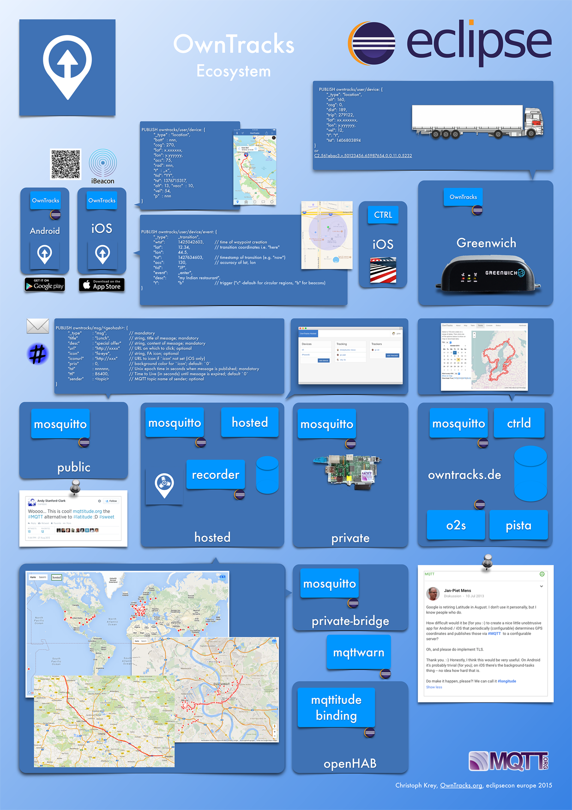

OwnTracks Booklet
Intro
Guide
What it does
Clients
Scenarios
Apps
Topics
Broker
Bridging
Waypoints
Beacons
Features
Comparison
iOS
Android
Security
TLS
TLS client
Location
Tracker ID
Friends
Card
POI
Tours
Waypoints
Beacons
Pedometer
Featured
Encryption
Remoteconfig
Debugging
Traccar
API
JSON
HTTP
MQTT
URIs and QR codes
Code
Sundry
Terminology
Docker
Privacy
People
Ideas
Answers
Press
English
German
OwnTracks Booklet
Docs
»
Sundry »
Press
Edit on GitHub
Press
English

OwnTracks Poster @ eclipsecon Europe 2015
German
Anwesenheitserkennung reloaded
ownTracks & Mosquitto – Google Latitude-Clon im Eigenbau
Latitude im Eigenbau – volle Kontrolle
openHAB für mehr Datenschutz in der Heimautomatisierung
mentions OwnTracks
openHAB 1.4: Offenheit und Datenschutz im Fokus des Smart-Home-Projekts
GitHub
« Previous